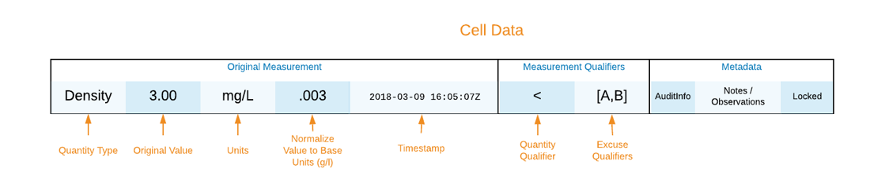

Spreadsheets
Water treatment, purpose built data models of tabular data related to water treatment operations. Used in conjunction with Enterprise Twins to model the treatment process and Common Computations to calculate data needed to operate treatment processes and facilities within regulatory compliance.
Worksheet

Worksheet Type
Time-window based view (Hourly, Daily, etc.)
For Windows such as Daily a definition of day is required
Based on a Time Zone
This is the defined list of all of the columns, not the visual display (Worksheet View)
Row
The data recorded for a time window
Row Number
Each row will have an incremental number that can be referenced This row number is the number of rows starting from January 1, 1900.
Worksheet Row Time Window
Within a worksheet a span of time with a beginning and end time.
Worksheet Column (Parameter)
Represents the specific occurrence of the parameter gathered within a worksheet.
Cell
Value recorded for a Worksheet Column within the worksheet row
Cell Data
Versions of the data entered into the Cell
Sheet
A rendering of a Worksheet with a reduced set of columns (parameters)